Aktuelles
Neu im Verein
Termine, Rückblicke und Neuigkeiten aus allen Abteilungen. Fotos und kurzfristige Infos findest du auch auf Instagram.
Bodycombat & Zumba
Weiterlesen
Sportabzeichen Saisonstart 2026
Weiterlesen
Termine Sportabzeichen2026
Weiterlesen
Zukunft der Sportanlagen: Osterburken bündelt Kräfte.
SV Osterburken sucht gemeinsam mit Verband und Stadt nach Lösungen für marode Sportanlagen Der SV Osterburken hat gemeinsam mit dem Badischen Fußballverband (bfv) und der Stadt …
Weiterlesen
Sportabzeichen Verleihung + Info 2026
Weiterlesen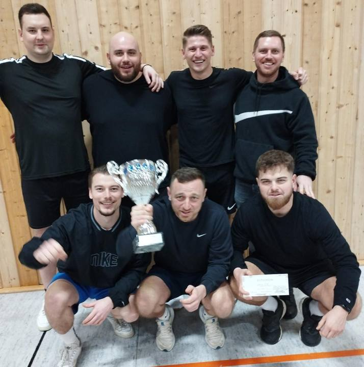
Erstes Faustball Turnier 2026
Das Siegerteam Von oben links: Hermann Wegner, Roman Gugu, Alex Titarenko, Stefan Elert. Unten von links: Andreas Schiler Johannes Elert und Fabian Elert. Am 17. Januar 2026 …
Weiterlesen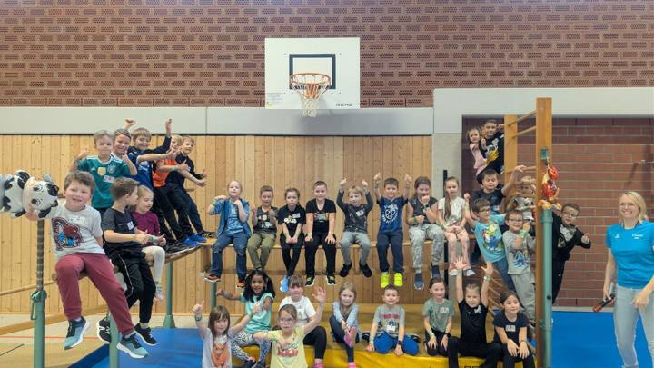
Rückblick: „Der Boden ist Lava“ – Ein feuriges Sport-Spektakel in Osterburken!Der Boden Ist Lava!
Am Samstag, den 8. November 2025, hieß es in der Limes Sporthalle: „Achtung, Vulkanausbruch!“ Unser Event „Der Boden ist Lava“ war ein voller Erfolg und hat für strahlende Augen …
Weiterlesen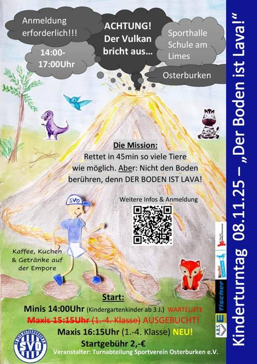

Mit viel Unterstützung: SV Osterburken investiert in Mähroboter
Der SV Osterburken setzt auf moderne Technik bei der Sportplatzpflege. Ein GPS-gesteuerter Mähroboter sorgt dafür, dass die drei Sportplätze des Vereins jederzeit in Top-Zustand …
Weiterlesen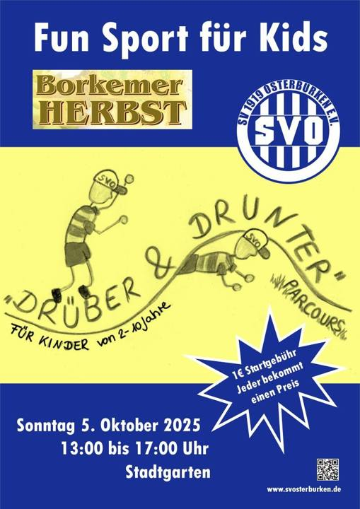
Borkemer Herbst 2025
Weiterlesen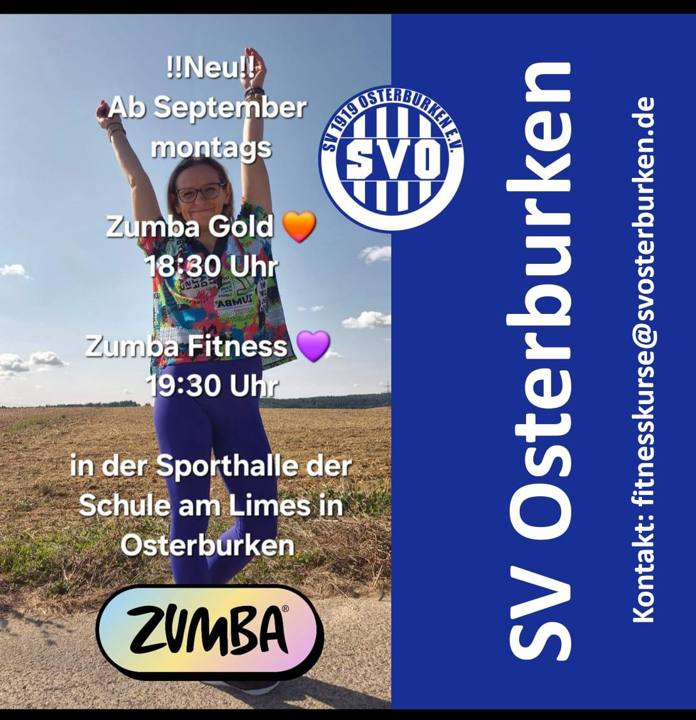
Neu! Zumba ab September
Weiterlesen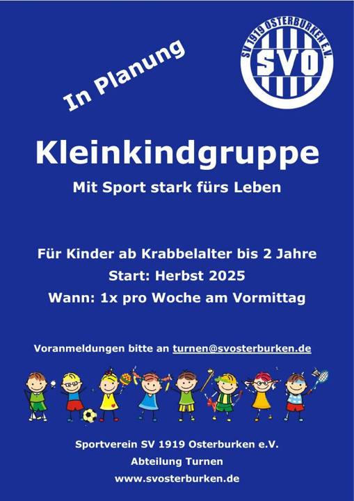
Kleinkindgruppe in Planung
Weiterlesen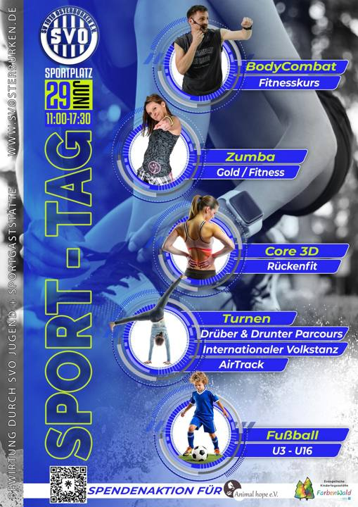
Sporttag beim SVO
Weiterlesen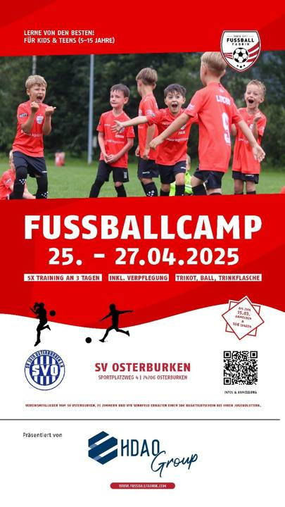
Fußballcamp
Weiterlesen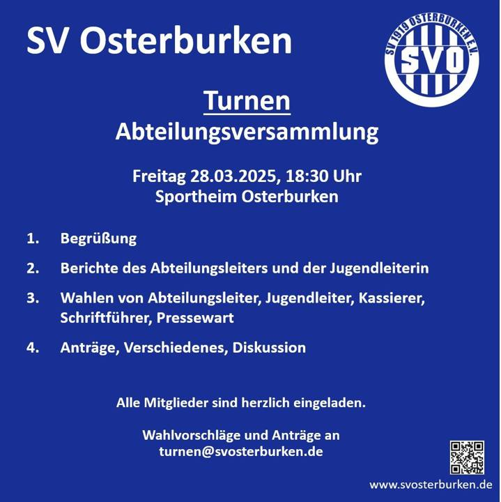
Turnen Abteilungsversammlung
Weiterlesen
Sportabzeichen Info-Veranstaltung
Weiterlesen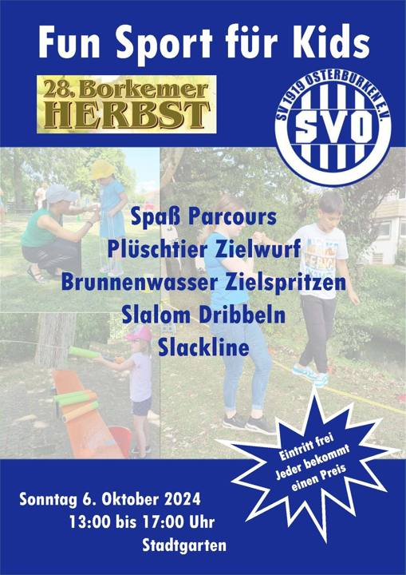
Fun Sport für Kids Borkemer Herbst 2024
Weiterlesen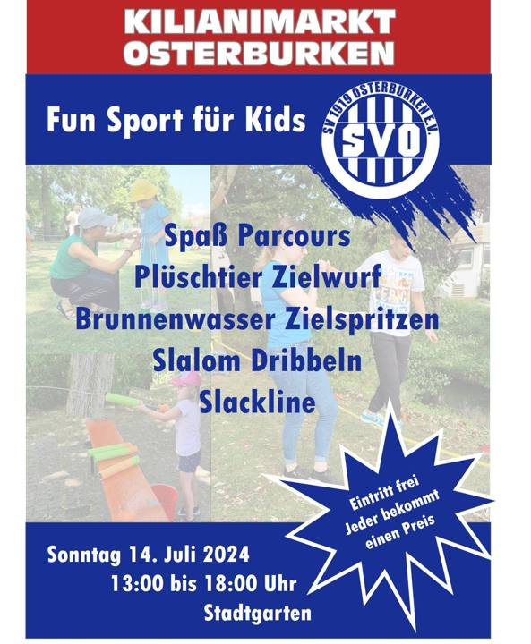
SVO bei Kilianimarkt Osterburken
Weiterlesen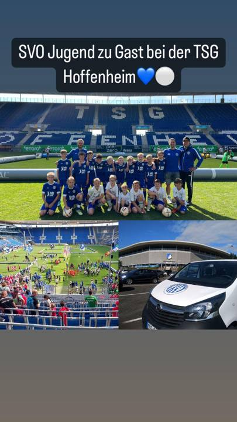
SVO Jugend zu Gast bei der TSG Hoffenheim
Weiterlesen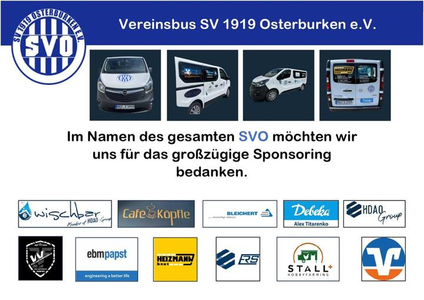
Vereinsbus SV 1919 Osterburken e.V
Weiterlesen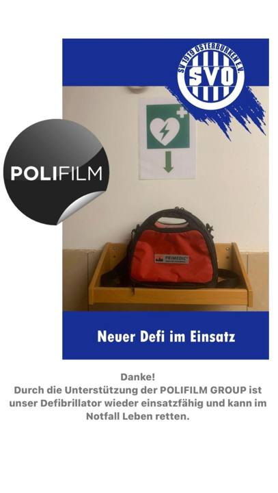
Neuer Defi im Einsatz
Weiterlesen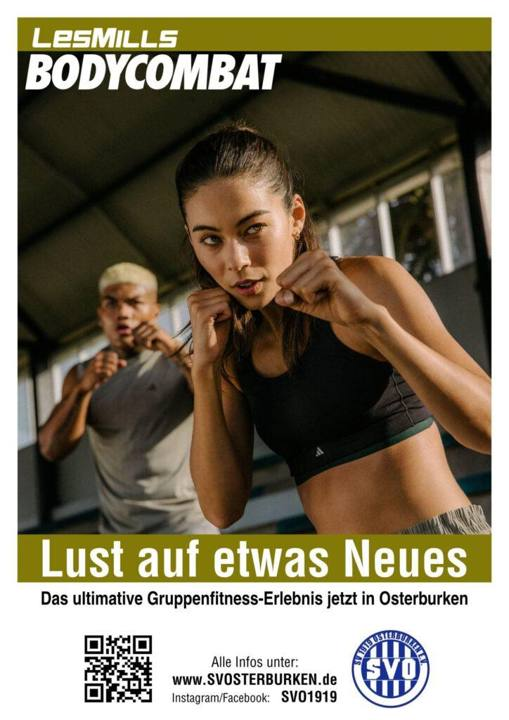
Fitnesskurs BodyCombat
Wann: Montag 20:00 Uhr, Mittwoch 19:30 Uhr Wo: Osterburken, Sporthalle am Limes Weitere Infos gibt es hier Bei Interesse oder Fragen bitte hier melden: …
Weiterlesen